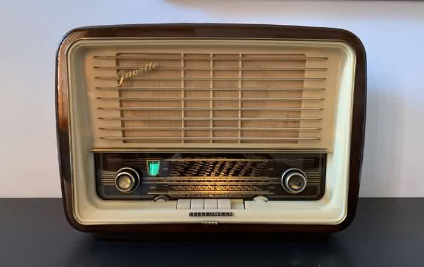

Complete audio receiver solution for Raspberry Pi
WiFi Setup • Spotify Connect • Bluetooth Audio
Install the complete audio system with a single command:
💡 Tip: No tip yet.
Automatic WiFi configuration portal that starts when no internet is available.
Just connect your phone to the Device Access Point, and automatically setup page will open on which you can select a wifi network and enter the password for that wifi network.
Spotify Connect monitoring and automatic service management.
Just connect and play.
It will stop bluetooth, automatically when connecting to the spotify Connect.
Bluetooth audio receiver
Just connect and play.
Other sources will automatically disconnect. No hasle with multiple connections or blocking connection due existing connecionts.
View source code and download individual components:
📁 Simple-WiFi 📁 Simple-BT 📁 Simple-Spot"Easy to use tools without ApeSoft"
By R. Moeijes - Designed for embedded devices that need simple audio setup without complex authentication.
Usage: An music player for build into an old radio like this one.
Or as part of an multi purpose device, like bluetooth, spotify, and internet radio device. (internet radio not yet created)